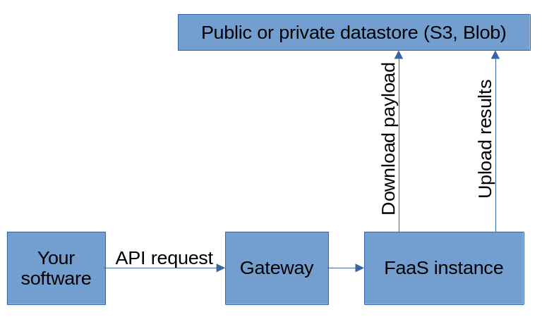

Software
Schedular
A simple POST API request can be used to create a FaaS instance. The JSON data structure contains the parameters like payload_url, software type etc.

Deploy your code
The code that needs to run on the FaaS instance can be downloaded from anywhere. And the result can also be uploaded anywhere. 